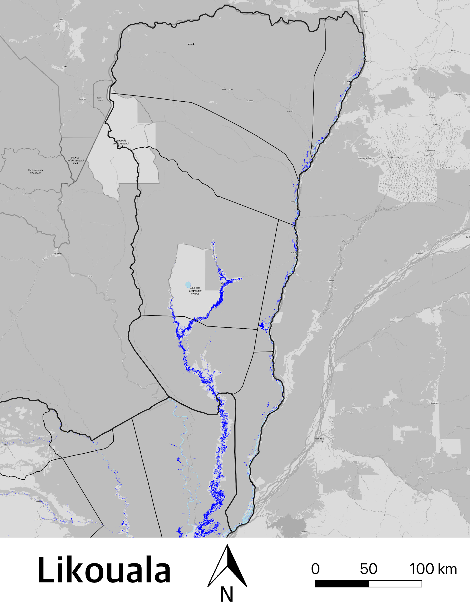

# Monthly Flood Status Report - January 2020: ### Prepared for for the Congo Country Office of the World Food Programme > Updated: February 20th, 2020
### Niger River Monitoring
### Department Impacts
### Department: Likouala
- Flooded Area: **900km**<sup>2</sup> - Total estimated population affected: **55,800**
- Source: Sentinel-1 - GRD, Sentinel-2 - MSS, Landsat 8 OLI
